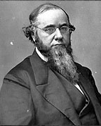

|

|

|
|
|
Edwin McMasters Stanton, a distinguished member of Lincoln's cabinet,
was born on December 19, 1814 in Steubenville, Ohio. Stanton
briefly attended Kenyon College in 1828, and then studied
law. He began his career in Cadiz, Ohio. A Democrat, Stanton
worked for Martin Van Buren in the presidential election of
1840. Known for his antislavery position, Stanton found it
difficult but not impossible to support James Polk's
expansionism in the Mexican-American War. In 1844 his first
wife died, leaving him a widower with two children. Later,
he married Ellen Hutchinson, with whom he had four more
children.
Stanton moved to Pittsburgh in the mid-1840s. He
developed a reputation as a dynamic and hard-hitting lawyer,
with an unerring instinct for his opponents' weaknesses. He
often argued cases before the U.S. Supreme Court, but became
famous for the first, and successful, use of the "temporary
insanity" defense in the Daniel Sickles murder trial.
President James Buchanan appointed Edwin Stanton the U.S.
Attorney General in December of 1860. After Southern
secession, Stanton labored long hours in his Washington,
D.C. office to preserve the Union. He tried to rally the
weak Buchanan to defend Fort Sumter, while secretly meeting
with the new secretary of state William Seward to forge a
workable compromise. Stanton remained in Washington after
Lincoln's inauguration as legal consultant to Simon Cameron,
the Secretary of War. Stanton also became very friendly with
General George McClellan, soon to be commander of the Union
Army. Like many Democrats during this time, Stanton
expressed contempt for President Lincoln.
That negative opinion of the President soon transformed
into respect, and then a deep admiration. When Cameron
resigned from the war department, Lincoln replaced him with
Stanton. Stanton proved to be a brilliant appointment. He
threw himself into organizing the massive war, and stamped
every area of military effort with his immense energy,
impeccable honesty and sincere belief in Unionism. He
established a viable and respectful working relationship
with Congress and modernized outmoded and corrupt War
Department practices. Efficiency and fairness were the
standards that he tried to bring to the military departments
under his control. Stanton's ability to coordinate
successfully complex logistical movements became legendary.
Along the way, he made many enemies with his overbearing
personality. Stanton was impatient and rude, and former
friends became opponents after feeling the sting of his
sarcasm. As Lincoln and Stanton pushed for a harder, wider
war, both became committed to emancipation and the
enlistment of African American soldiers. By mid-1863 Stanton
switched his allegiance to the Republican Party. Indeed, it
was Stanton who made sure that thousands of Union soldiers
could receive special furloughs so they could return to
their respective states and vote in the 1864 election. As he
predicted, Lincoln won the soldier vote by a huge margin.
Stanton's position as the Supervisor of Internal Security
created a firestorm of criticism. From March 1862 Stanton
was determined to crack down on all dissent and treason
within the northern home front, which was growing steadily.
To ensure loyalty, Stanton expanded the suspension of habeas
corpus, arrested Southern sympathizers, and created a
special police force to enforce the draft laws. Late in the
war Stanton pressed for the generous treatment of freed
people, and worked closely with Lincoln on reconstruction
policy. Shocked and grieving after Lincoln's assassination,
Stanton and the War Department took charge of the
investigation. Stanton insisted that the conspirators be
tried in military court, and strongly favored the death
penalty.
Stanton continued in his post during most of Andrew
Johnson's Administration. His logistical skills were needed
in the demobilization of the huge Union Army, and his
concern for the rights of freed men and women was required
to counter President Johnson's overly lenient reconstruction
plans for former Confederates. Increasingly, Stanton and
Johnson were at odds over Reconstruction. Stanton advocated
continued support for the Freedman's Bureau, and favored the
Fourteenth Amendment. He joined the Radical Republicans
against the president. By the summer of 1867, Johnson, no
longer confident of his Secretary's loyalty, wished to
remove him from the Cabinet. Congress passed the Tenure of
Office Act to stop Johnson from firing Stanton, but the
President acted anyway, replacing him with General U.S.
Grant. Johnson's violation of the Tenure of Office Act was
the immediate reason for his impeachment trial in 1868.
After Johnson was acquitted, Stanton resigned from his
position, confident that the fruits of the Union victory had
not been wasted away, and that the new nation would emerge
under the control of the Republican-dominated Congress.
In 1869, President Grant appointed Edwin M. Stanton to
the Supreme Court. He died in December of the same year,
before he could actually serve on the Court.
Source: Joan Waugh, ed., Facts on File Encyclopedia of American
History: Civil War and Reconstruction, 1856 to 1869 (New York: Facts on
File, 2003), 333-334.
|